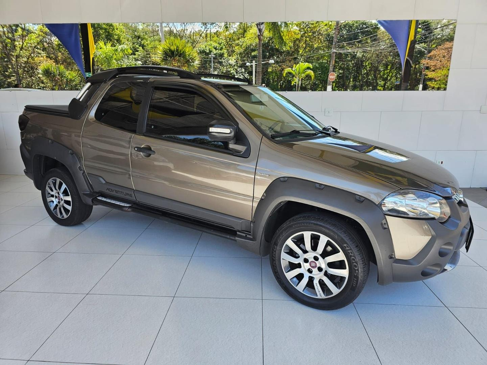
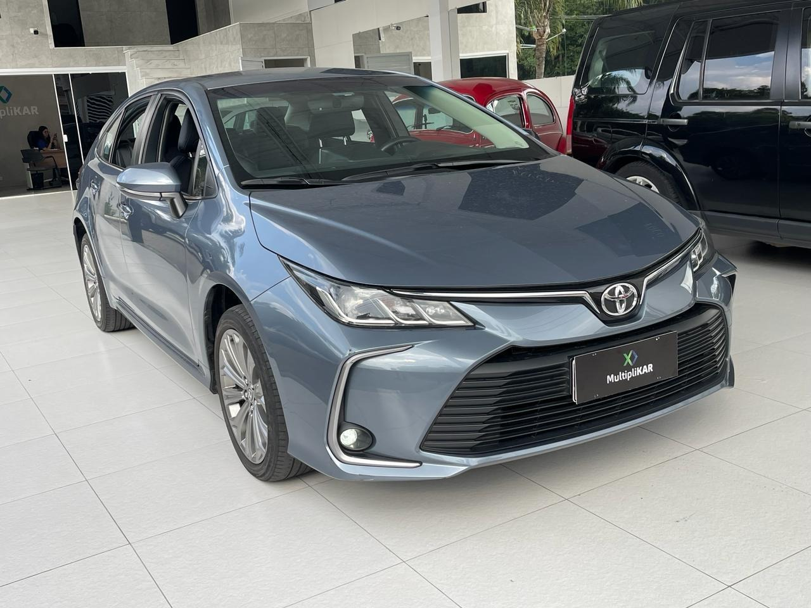

Estoque de Veículos — Multiplikar Automóveis
Consulte nossa relação de veículos em exposição física e virtual no bairro Vila São Geraldo.
Multiplikar Automóveis | Vila São Geraldo
Consulte nossa relação de veículos em exposição física e virtual no bairro Vila São Geraldo.
Abaixo encontra-se a visão consolidada dos veículos cadastrados para fins de demonstração estrutural:
| Marca | Modelo | Ano | Cor | Quilometragem | Combustível | Câmbio | Preço (R$) | Situação |
|---|---|---|---|---|---|---|---|---|
| Chevrolet | Onix Plus 1.0 Turbo Premier | 2024/2025 | Prata | 45.500 km | Flex | Automático | 89.900,00 | Disponível |
| Volkswagen | T-Cross Sense TSI | 2021/2021 | Branco | 79.200 km | Flex | Automático | 89.900,00 | Disponível |
| Fiat | Strada Adventure Cabine Dupla | 2014/2014 | Cinza | 173.000 km | Flex | Manual | 58.900,00 | Disponível |
| Toyota | Corolla XEI 2.0 | 2020/2020 | Cinza Metálico | 61.000 km | Flex | Automático (CVT) | 125.900,00 | Disponível |
| Renault | Kwid 1.0 Zen | 2025/2026 | Cinza | 32.678 km | Flex | Manual | 63.900,00 | Disponível |
| Total de veículos catalogados no exemplo: 5 unidades (5 disponíveis). | ||||||||
A seguir, apresentamos cada veículo de maneira individualizada, destacando seus atributos técnicos e situação comercial:

Solicitar Simulação de entrada ou orçamento para este veículo →
Solicitar Simulação de entrada ou orçamento para este utilitário →

Solicitar Simulação de entrada ou orçamento para este utilitário →

Solicitar Simulação de entrada ou orçamento para o Toyota Corolla →
Solicitar Simulação de entrada ou orçamento para o Renault Kwid →